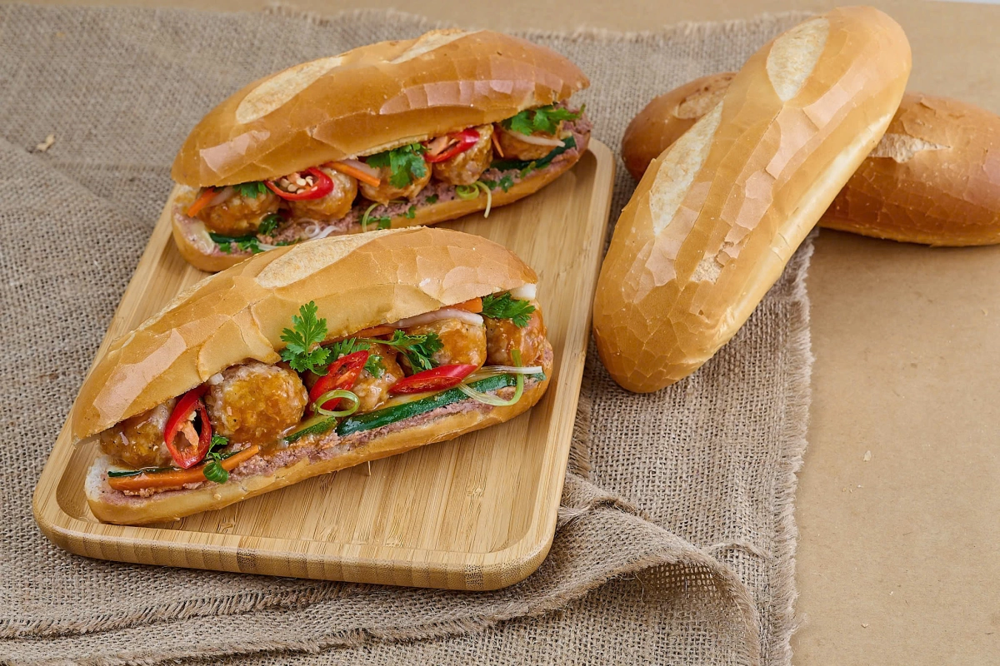

Home

Mô tả
- Món ăn đường phố huyền thoại của Việt Nam được bạn bè quốc tế ca ngợi. Chiếc bánh mì có vỏ ngoài giòn rụm, ruột xốp mềm, bên trong gói trọn vị béo ngậy của pate, bơ, vị đậm đà của thịt/chả và sự tươi mát, giải ngấy của đồ chua, rau thơm.
Nguyên liệu
- Vỏ bánh: 2-3 ổ bánh mì Việt Nam (nướng lại cho giòn).
- Nhân bánh: 100g pate gan, 100g chả lụa (hoặc thịt xá xíu, thịt nướng), bơ trứng gà (mayonnaise kiểu Việt).
- Rau ăn kèm: Dưa leo thái mỏng, rau mùi (ngò rí), hành lá, ớt sừng.
- Đồ chua: Đu đủ hoặc củ cải trắng và cà rốt ngâm chua ngọt.
- Nước sốt: Nước tương (hắc xì dầu) hoặc nước sốt thịt xá xíu đậm vị.
Các Bước làm
- Chuẩn bị nguyên liệu: Cắt dọc một bên ổ bánh mì. Thái mỏng chả lụa, thịt xá xíu. Rửa sạch rau mùi, hành lá, dưa leo. Đồ chua vắt ráo nước.
- Quết bơ, pate và xếp nhân: Dùng dao quết một lớp bơ trứng gà, sau đó đến một lớp pate béo ngậy vào bên trong ruột bánh mì. Tiếp tục xếp lần lượt chả lụa, thịt, dưa leo, đồ chua và rau mùi vào dọc theo ổ bánh.
- Hoàn thiện: Rưới một chút nước tương hoặc nước sốt thịt lên phần nhân, thêm vài lát ớt nếu thích ăn cay. Ép nhẹ bánh mì và thưởng thức ngay độ giòn rụm, đậm đà.